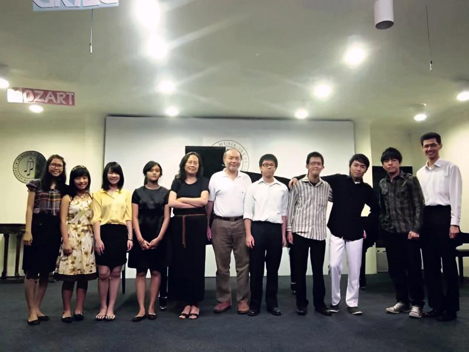
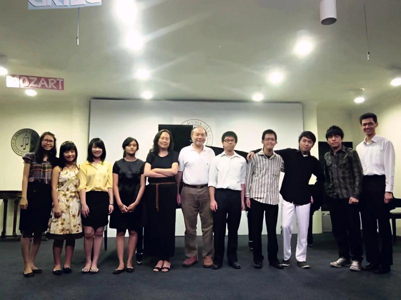

Sonata Music Studio is a sanctuary for structured musical growth rooted in cultural richness and reverence. Led by Felix Satia—music instructor, arranger, and composer—the studio combines classical precision with contemplative artistry, inspired by heritage, sacred tradition, and cross-cultural refinement.
About


 
